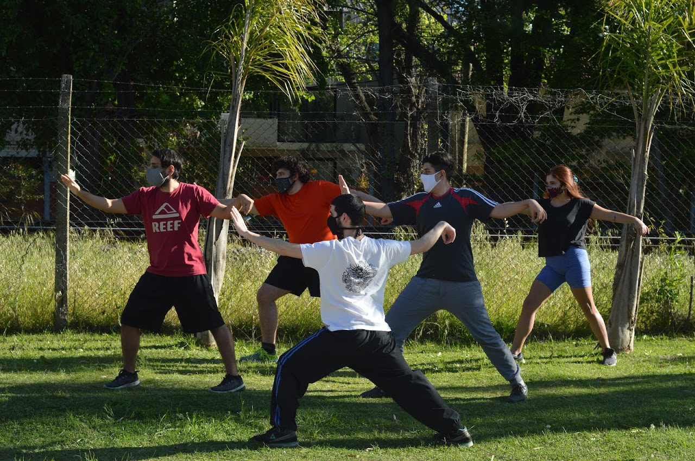
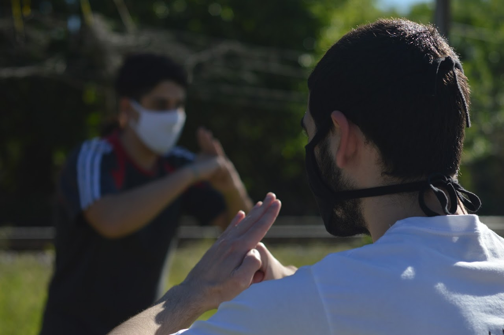

Clases de Tai Chi Chuan
El Tai Chi Chuan es un arte marcial chino inventado en el siglo
XVII. Es una de las actividades más practicadas en el mundo gracias
a sus tantos beneficios para la salud, brindados por los ejercicios
de respiración con los que se la acompaña (Chi Kung), el
entrenamiento postural y el bajo impacto que tiene en el cuerpo.
Tenemos horarios por la mañana y por la tarde. ¡Te invito a probar
esta maravillosa actividad para que descubras de qué se trata!


Clases de Kung Fu
El estilo que practicamos se llama Hung Sing Choy Li Fat. Proviene
del sur de China y fue inventado en el siglo XIX. Tiene un arsenal
técnico muy completo, y se especializa en los ganchos, barridas y
derribes, caracterizándose también por sus posturas bajas y formas
largas. Tenemos clases por la tarde/noche, grupo juveniles y
adultos. ¡Animate a practicar un arte marcial! ¡Te esperamos!